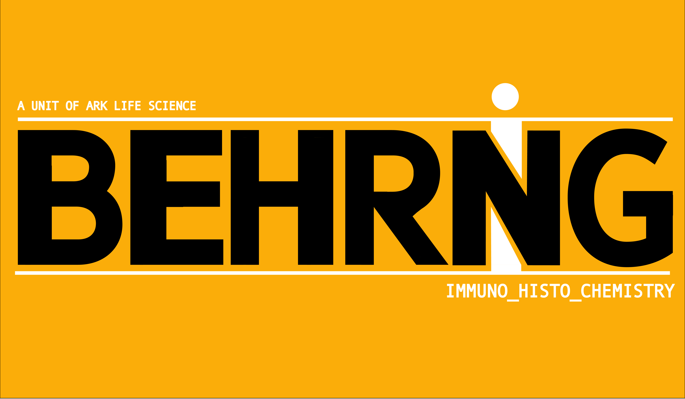

Referral review and specimen assessment
We review specimen details, referral context, and special requests before the case moves forward.

Pathology-first lab
Behring DX brings pathology services closer to Madurai with a sharper focus on immunohistochemistry, specimen handling, and timely reporting.
We review specimen details, referral context, and special requests before the case moves forward.
Cases are assigned, labelled, and routed for careful pathology handling inside the lab.
Slides move through visible pathology stages, with IHC handled as a dedicated service instead of an afterthought.
The final report is built from the same case trail, so release stays consistent from specimen to sign-out.
About Us
Behring DX was founded by A. Radhakrishnan, who built and ran Sunmed Distributors, a surgicals and hospital equipment distribution company, for nearly 35 years.
The idea for this venture came from seeing, up close, how immunohistochemistry staining requirements in Madurai are often sent to distant cities such as Mumbai, making the process slower and more expensive.
Inspired by his wife’s work as a pathologist, he started Behring DX to help bring focused pathology services closer to where patients and clinicians actually need them.
Referral
Send specimen details, clinical context, and requests to the lab through one clear intake path.
Until the public form URL is connected, referrals can continue through the current intake portal.
Open intake portal